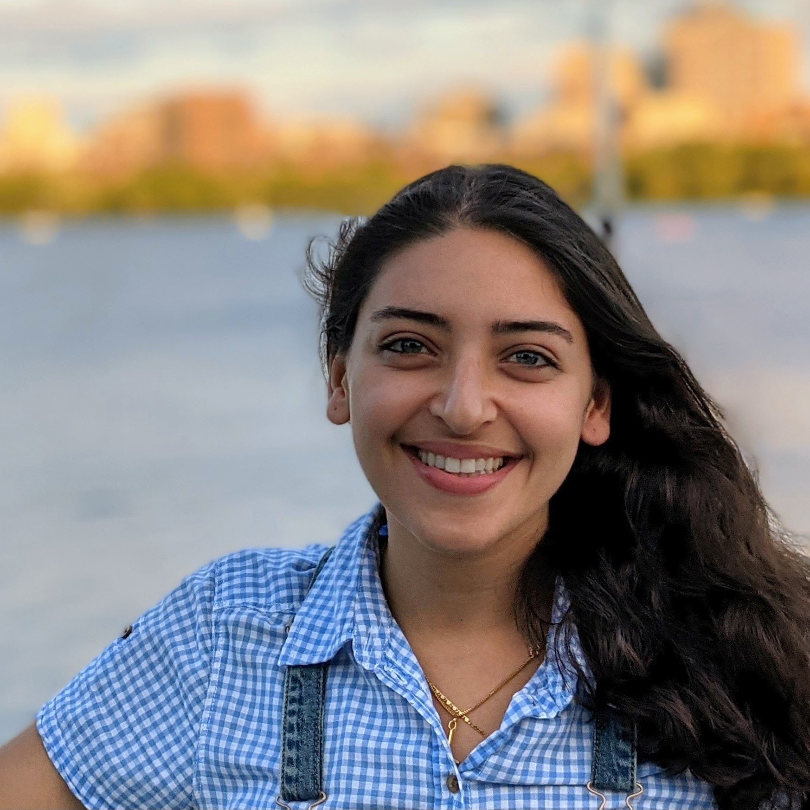

Mirna
Kheir Gouda
Kheir Gouda
About
Areas of interest
I hold a PhD in Bioengineering from MIT. My thesis focused on plastic bio-upcycling, specifically engineering bacteria to convert nylon waste into high-value chemicals. Through this work, I've developed a deep appreciation for microbes as tiny factories that can be harnessed to solve big challenges.
I also have spent significant time building a foundation in machine learning, an area I am genuinely fascinated by and believe can significantly enhance scientific discovery.
For fun, I enjoy cooking, hiking, swimming, and lately, woodworking.